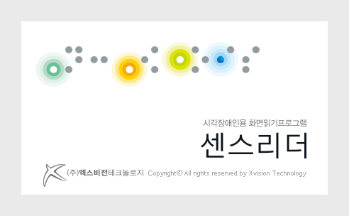

(주)엑스비전테크놀로지는 개인정보 보호법 제30조에 따라 정보주체의 개인정보를 보호하고 이와 관련한 고충을 신속하고 원활하게 처리할 수 있도록 하기 위하여 다음과 같이 개인정보 처리지침을 수립, 공개합니다.
(주)엑스비전테크놀로지는 다음의 목적을 위하여 개인정보를 처리합니다. 처리하고 있는 개인정보는 다음의 목적 이외의 용도로는 이용되지 않으며, 이용 목적이 변경되는 경우에는 개인정보 보호법 제18조에 따라 별도의 동의를 받는 등 필요한 조치를 이행할 예정입니다.
① 센스리더/센스원 리더 통합서비스의 회원 가입 및 관리
회원가입 의사 확인, 회원제 서비스 제공에 따른 본인 식별 인증, 회원 자격의 유지, 관리, 제한적 본인 확인제 시행에 따른 본인 확인, 각종 고지 통지 등의 목적으로 개인정보를 처리합니다.
② 민원 사무 처리
민원인의 신원 확인, 민원사항 확인, 사실 조사를 위한 연락 통지, 처리결과 통보 등을 위하여 개인 정보를 처리합니다.
③ 재화 또는 서비스 제공
소프트웨어 인증 및 서비스 제공, 콘텐츠 제공, 본인인증 등을 목적으로 개인정보를 처리합니다.
(주)엑스비전테크놀로지는 법령에 따른 개인정보 보유, 이용기간 또는 정보주체로부터 개인정보를 수집시에 동의받은 개인정보 보유, 이용기간 내에서 개인정보를 처리, 보유합니다.
각각의 개인정보 처리 및 보유 기간은 다음과 같습니다.
① 센스리더/센스원 리더 통합서비스 회원 가입 및 관리 : 센스리더/센스원 리더 통합서비스 탈퇴시까지
다만, 다음의 사유에 해당하는 경우에는 해당 사유 종료시까지
- 관계 법령 위반에 따른 수사·조사 등이 진행 중인 경우에는 해당 수사·조사 종료 시까지
- 민원사무 처리 : 민원처리 종료 후 3년
① 정보주체는 (주)엑스비전테크놀로지에 대해 언제든지 개인정보 열람, 정정, 삭제, 처리정지 요구 등의 권리를 행사할 수 있습니다.
② 제1항에 따른 권리 행사는 (주)엑스비전테크놀로지에 대해 개인정보보호법 시행령 제41조 제1항에 따라 서면, 전자우편, 모사전송(FAX) 등을 통하여 하실 수 있으며, (주)엑스비전테크놀로지는 이에 대해 지체없이 조치하겠습니다.
③ 제1항에 따른 권리 행사는 정보주체의 법정대리인이나 위임을 받은 자 등 대리인을 통하여 하실 수 있습니다. 이 경우 개인정보 보호법 시행규칙 별지 제11호 서식에 따른 위임장을 제출하셔야 합니다.
④ 개인정보 열람 및 처리정지 요구는 개인정보보호법 제35조 제5항, 제37조 제2항에 의하여 정보주체의 권리가 제한 될 수 있습니다.
⑤ 개인정보의 정정 및 삭제 요구는 다른 법령에서 그 개인정보가 수집 대상으로 명시되어 있는 경우에는 그 삭제를 요구할 수 없습니다.
⑥ (주)엑스비전테크놀로지는 정보주체 권리에 따른 열람의 요구, 정정·삭제의 요구, 처리정지의 요구 시 열람 등 요구를 한 자가 본인이거나 정당한 대리인인지를 확인합니다.
(주)엑스비전테크놀로지는 다음의 개인정보 항목을 처리하고 있습니다.
① 센스리더/센스원 리더 통합서비스 회원 가입 및 관리
- 필수항목 : 성명, 아이디, 비밀번호, 생년월일 및 사업자번호, 주소, 연락처
② 소프트웨어 인증
- 필수항목 : 아이디, 비밀번호
(주)엑스비전테크놀로지는 개인정보의 안전성 확보를 위해 다음과 같은 조치를 취하고 있습니다.
① 관리적 조치 : 내부관리계획 수립, 시행, 정기적 직원 교육 등
② 기술적 조치 : 개인정보처리시스템 등의 접근권한 관리, 접근통제시스템 설치, 고유식별정보 등의 암호화, 보안프로그램 설치
③ 물리적 조치 : 전산실, 자료보관실 등의 접근통제
① (주)엑스비전테크놀로지는 개인정보 처리에 관한 업무를 총괄해서 책임지고, 개인정보 처리와 관련한 정보주체의 불만처리 및 피해구제 등을 위하여 아래와 같이 개인정보 보호책임자를 지정하고 있습니다.
1. 개인정보 보호책임자
성명 : 송오용
직책 : CEO / CPO
연락처 : 02-888-1623
이메일 : senseworld@senwd.co.kr
② 정보주체께서는 (주)엑스비전테크놀로지의 서비스를 이용하시면서 발생한 모든 개인정보 보호 관련 문의, 불만처리, 피해구제 등에 관한 사항을 개인정보 보호책임자에게 문의하실 수 있습니다. (주)엑스비전테크놀로지는 정보주체의 문의에 대해 지체없이 답변 및 처리해드릴 것입니다.
① 이 개인정보 처리방침은 2020년 07월 01일부터 적용됩니다.